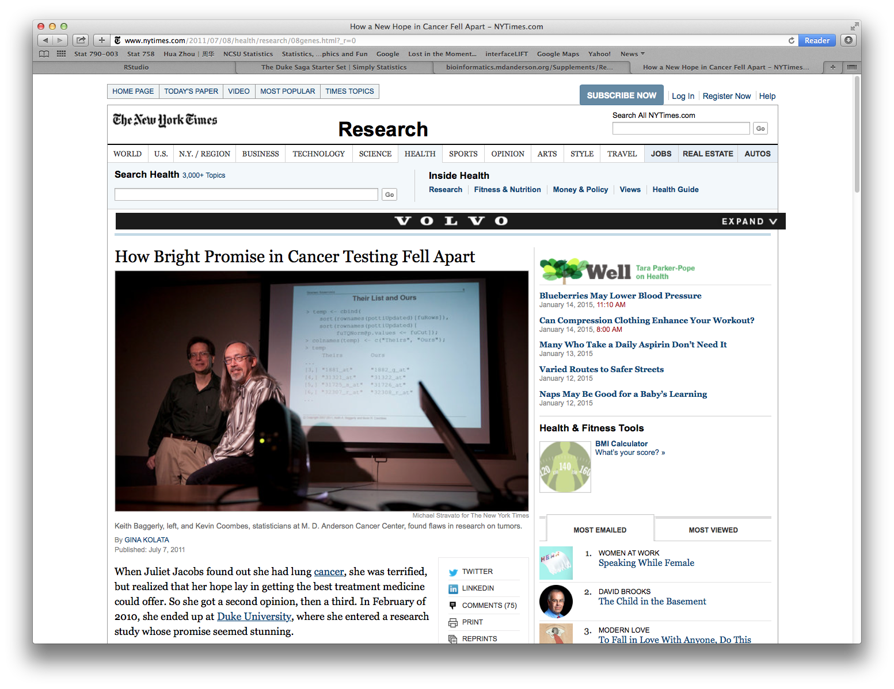
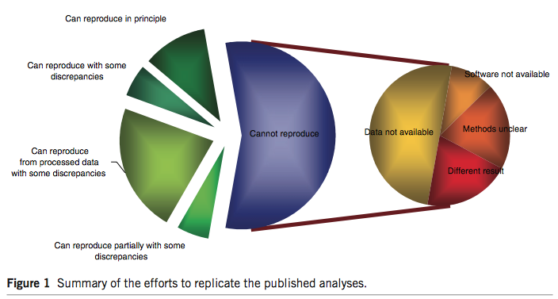
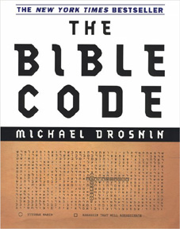
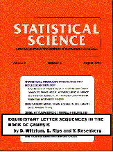
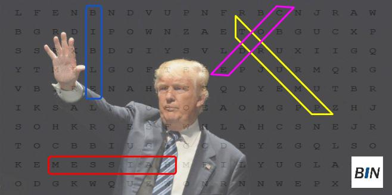

while true
Student: "that idea you told me to try - it doesn't work!"
Professor: "ok. how about trying this instead."
endReproducible Research
Biostat 203B
1 Reproducible research in statistics/data science
An article about computational science in a scientific publication is not the scholarship itself, it is merely advertising of the scholarship. The actual scholarship is the complete software development environment and the complete set of instructions which generated the figures.
Buckheit & Donoho (1995)
2 Non-reproducible research
2.1 Duke Potti scandal

Potti, Dressman, Bild, & Riedel (2006): https://www.nature.com/articles/nm1491
Baggerly & Coombes (2009): https://projecteuclid.org/euclid.aoas/1267453942
2.2 Microarray studies

Nature Genetics (2015 Impact Factor: 31.616). 20 articles about microarray profiling published in Nature Genetics between Jan 2005 and Dec 2006.
2.3 Bible code



3 Why reproducible research
Reproducibility has been the foundation of science. It helps accumulate scientific knowledge.
Greater research impact.
Better work habit boosts quality of research.
Better teamwork. For you as graduate students, it means better communication with your advisor.
Unless you reproduce the computing environment (algorithms, dataset, tuning parameters), others cannot help you.
4 How to be reproducible in data science?
When we publish articles containing figures which were generated by computer, we also publish the complete software environment which generates the figures.
Buckheit & Donoho (1995)
A good example: http://stanford.edu/~boyd/papers/admm_distr_stats.html
I highly recommend the book Reproducible Research with R and RStudio by Christopher Gandrud.
5 Tools for reproducible research
Version control: Git+GitHub.
Distribute method implementation, e.g., R/Python/Julia packages, on GitHub or bitbucket.
Dynamic document: RMarkdown for R, Jupyter for Julia/Python/R, Quarto.
Docker container for reproducing a computing environment.
Cloud computing tools.
We are going to practice reproducible research now. That is to make your homework reproducible using Git, GitHub, and Quarto/RMarkdown.
6 References
Baggerly, K. A., & Coombes, K. R. (2009). Deriving chemosensitivity from cell lines: Forensic bioinformatics and reproducible research in high-throughput biology. Ann. Appl. Stat., 3(4), 1309–1334. https://doi.org/10.1214/09-AOAS291
Buckheit, JonathanB., & Donoho, DavidL. (1995). WaveLab and reproducible research. In A. Antoniadis & G. Oppenheim (Eds.), Wavelets and statistics (Vol. 103, pp. 55–81). Springer New York. https://doi.org/10.1007/978-1-4612-2544-7_5
McKay, B., Bar-Natan, D., Bar-Hillel, M., & Kalai, G. (1999). Solving the bible code puzzle. Statist. Sci., 14(2), 150–173. https://doi.org/10.1214/ss/1009212243
Potti, A., Dressman, H. K., Bild, A., & Riedel, R. F. (2006). Genomic signatures to guide the use of chemotherapeutics. Nature Medicine, 12(11), 1294–1300. https://doi.org/10.1038/nm1491
Witztum, D., Rips, E., & Rosenberg, Y. (1994). Equidistant letter sequences in the book of genesis. Statist. Sci., 9(3), 429–438. https://doi.org/10.1214/ss/1177010393